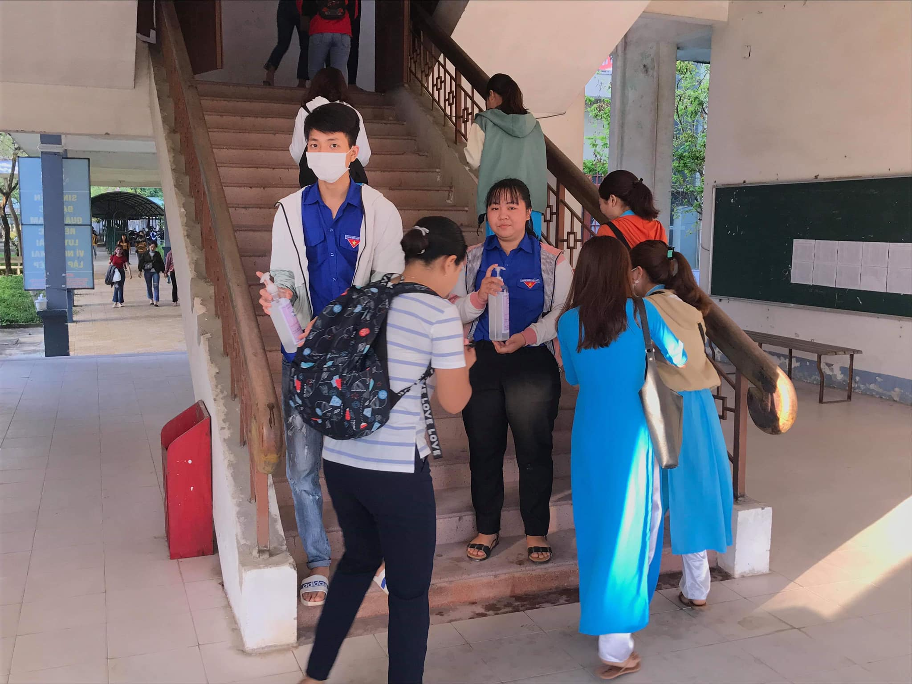

Sinh viên Trường Đại học Quảng Nam đi học trở lại: Phòng chống dịch Covid-19 vẫn là nhiệm vụ hàng đầu
Thực hiện chỉ đạo của UBND tỉnh Quảng Nam tại Công văn số 969/UBND-KGVX ngày 28/02/2020 về việc cho học sinh, sinh viên trên địa bàn tỉnh đi học lại và tăng cường các biện pháp phòng, chống dịch bệnh Covid-19 trong nhà trường, từ ngày 02/3, Trường Đại học Quảng Nam đã cho sinh viên quay trở lại học tập sau thời gian dài nghỉ học để phòng, chống dịch bệnh.
Để đảm bảo an toàn cho sinh viên trở lại học tập, nhà trường đã triển khai nhiều biện pháp phòng, chống dịch bệnh như: cho làm vệ sinh và phối hợp với Trung tâm Y tế Thành phố Tam Kỳ để tiến hành phun thuốc tiêu độc, khử trùng ở tất cả các khu giảng đường, phòng làm việc, thư viện, ký túc xá; giảng viên Khoa Lý - Hóa - Sinh của nhà trường đã pha chế dung dịch sát khuẩn theo hướng dẫn của Tổ chức Y tế thế giới (WHO) để phát miễn phí tới tận tay cán bộ, giảng viên, sinh viên; kiểm soát chặc chẽ người ra vào khuôn viên nhà trường và hạn chế tụ tập đông người.
Đoàn Thanh niên và Hội Sinh viên nhà trường đã tổ chức các nhóm để tuyên truyền, hướng dẫn sinh viên thực hiện phòng, chống dịch và xem đây là một trong những hoạt động trọng tâm của Tháng Thanh niên.
Em Touktar Chaladavong, một lưu học sinh Lào đang học tiếng Việt tại trường nói: “Khi nhận thông báo của trường về việc đi học trở lại, bản thân em và nhiều bạn khác cảm thấy khá lo lắng vì tình hình dịch bệnh còn diễn biến phức tạp. Nhưng khi trở lại trường, thấy nhà trường chuẩn bị khá chu đáo nên bọn em rất yên tâm. Bản thân bọn em cũng sẽ thực hiện tốt các biện pháp theo hướng dẫn của nhà trường để phòng chống dịch thật tốt.”
PGS.TS. Huỳnh Trọng Dương - Hiệu trưởng nhà trường cho biết với tinh thần “chống dịch như chống giặc”, công tác đảm bảo an toàn cho viên chức, người lao động và sinh viên của nhà trường trước những diễn biến phức tạp của dịch bệnh như hiện nay được đặt lên hàng đầu. Nhà trường đã và đang triển khai nhiều biện pháp phòng, chống dịch và chuẩn bị sẵn sàng để ứng phó khi có tình huống xấu xảy ra. Tuy nhiên, Hiệu trưởng nhà trường cũng yêu cầu sinh viên tập trung học tập và thực hiện tốt các biện pháp phòng, chống dịch theo hướng dẫn của Bộ Y tế, không bị tác động và hoang mang với những thông tin không chính thống trên mạng xã hội.
